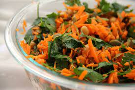
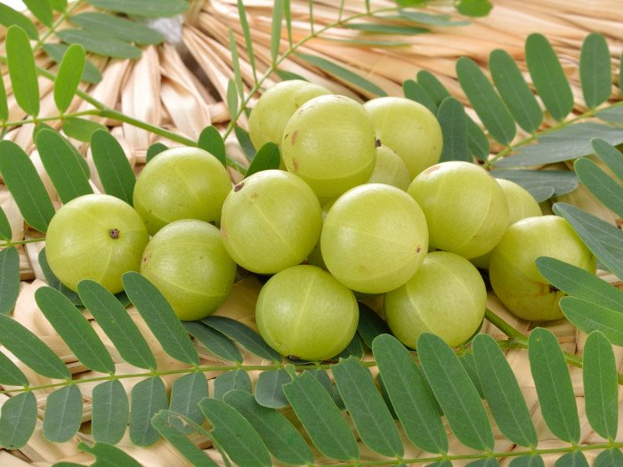
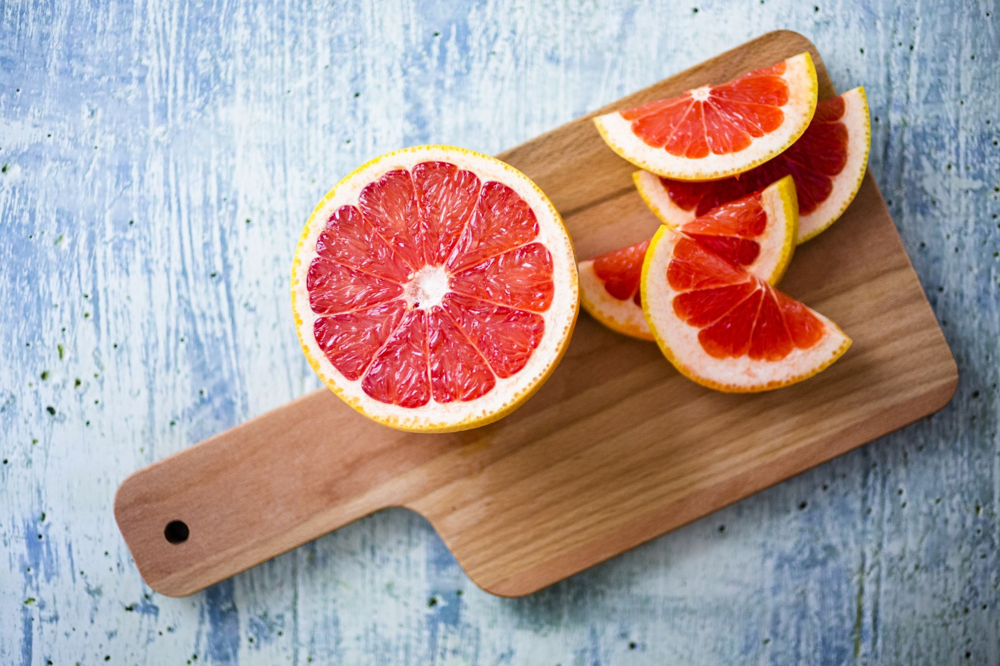
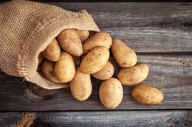
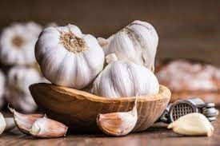

Natural Remedies
The cure from nature
Home Remedies For High Blood Pressure / Hypertension
What is High Blood Pressure?
High blood pressure (hypertension) is the pressure of blood in the arteries, which is commonly referred to as a silent killer. The systolic pressure (when the heart beats) is usually calculated as the sum of the diastolic and systolic pressures (time between two beats). High blood pressure is defined as a value of 140/90 mm Hg or greater on a regular basis. High blood pressure, if left untreated, can lead to heart attacks, strokes, kidney failure, and brain and vision damage.
Common Causes of High Blood Pressure
- Obesity
- Lifestyle
- Genetic factors
- Excessive alcohol
- Birth control pills
- Pain relievers
Home Remedies for High Blood Pressure
Tip 1:
Celery Leaves to Lower High Blood Pressure
Celery has a high concentration of 3-N-butylphthalide, a photochemical that aids in the regulation of high blood pressure. As a simple snack, eat a couple stalks of celery every day.

Tip 2:
Carrots, Spinach and Parsley to Keep Blood Pressure Under Control
Carrots, spinach, and parsley are examples of vegetables that help to decrease blood pressure. To help keep your blood pressure under control, drink a glass of vegetable juice twice a day.

Tip 3:
Indian Gooseberry Amla (Indian gooseberry) is a popular home treatment for high blood pressure. 1 tablespoon fresh amla juice + 1 tablespoon honey Take this mixture in the morning before breakfast on a daily basis.

Tip 4:
Grapefruit Helps Tone the Blood Vessels
Grapefruit is another treatment that can help to lower blood pressure. The vitamin component of the fruit aids in blood vessel toning.

Tip 5:
Potato Diet Helps Lower Blood Pressure
Boiled potatoes are a must-have for anyone who want to lower their blood pressure. The magnesium and potassium in the vegetable help to reduce blood pressure significantly.

Tip 6:
Garlic to Control High Blood Pressure
For high blood pressure, a garlic clove is strongly advised. Every day, eat one to two garlic cloves with your meals.
Contact Us
Send us a message
Sitemap
All our pages
You can visit the links for more informations